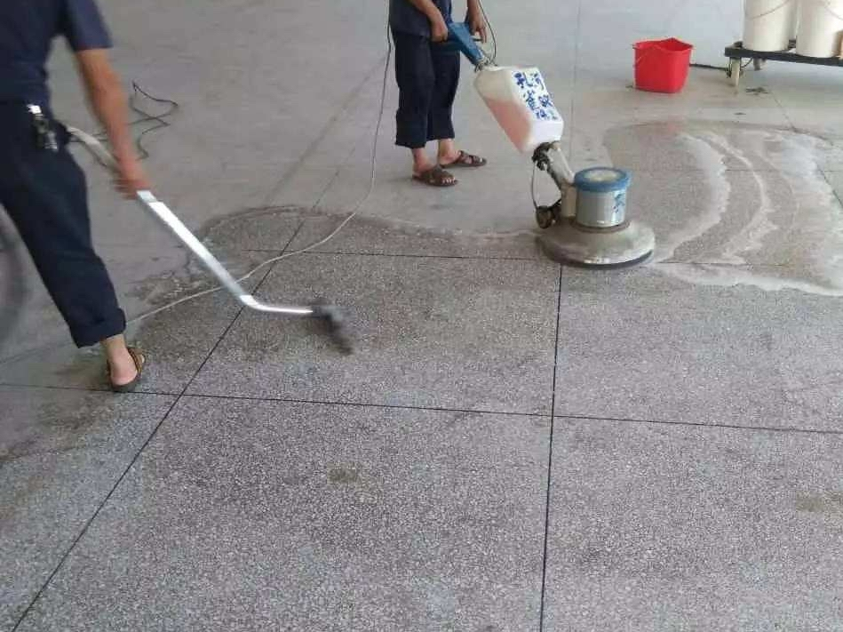
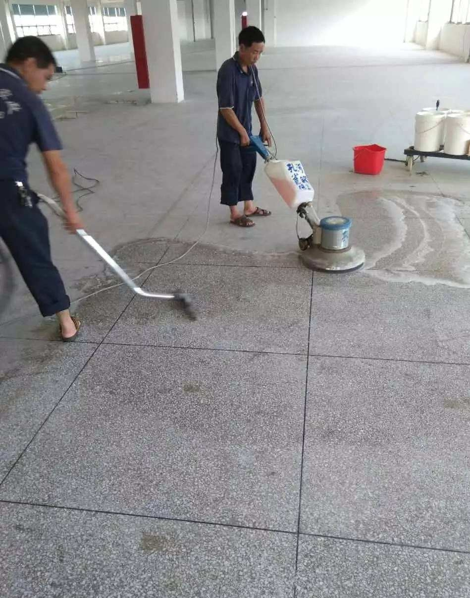

水磨石清洗
水磨石在现在是很常见的，它的使用范围非常广，一般会用于各种公共场合的地面装修中，主要是因为水磨石表面在处理后的亮度可高达70，而且有着防尘、防滑、不开裂、不怕重压和重物拖拉等等作用，价格低还能达到大理石的品质，因此选择的人特别多，在使用中要注意清洗才能保持光亮，那么水磨石怎么清洗呢？下面就随齐家网专家一起来了解看看吧。
一、水磨石怎么清洗
清洗水磨石可以借助专用工具、机器设备和清洁剂产品，譬如说水磨石地面粘结的污物可以用专用工具铲除，再根据地面材质、颜色等，配制专用药剂进行化学清洗，水磨石地面要的锈垢、油漆等重渍污物，需要用草酸等清洁，清洁过后要用抹布插干，再上一遍蜡。
二、水磨石地面出现质量问题要怎么处理
-
1、分格条折断 水磨石地面的分格条镶嵌不牢固，或者在液压前没有使用铁抹子拍打分格条两侧的话，在后续滚筒滚压是过程中，其分格条就会出现被压弯、压碎等问题，因此在滚压前，一定要先处理好分格条两边的石子，将其轻轻拍实才行。
-
2、面层有洞眼和孔隙 水磨石地面在机磨后容易出现一些洞孔，这时候会积累灰尘等，因此需要进行修补，可以用补浆方法，在水磨石磨光后，先用清水将其冲干净，然后再用浓稠的水泥浆将洞眼擦抹密实，在水泥砂浆硬化后，再进行磨光处理，最好是经过多次补浆、磨光，为图省事只施工一两遍的话，面层依旧会有小孔洞。
- 